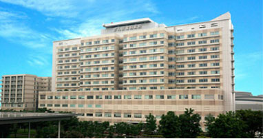
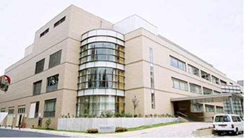
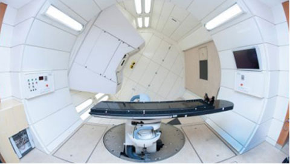
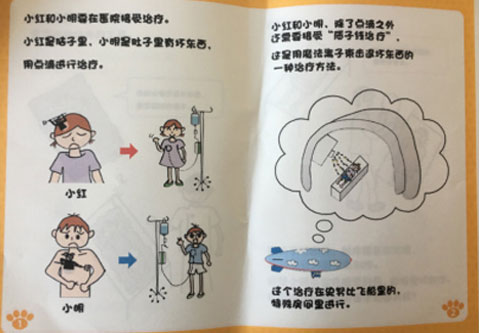
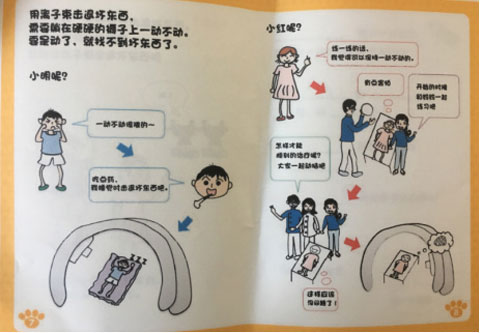
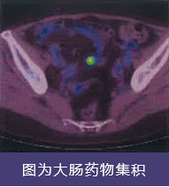

- X女士国立癌研问诊
- H先生去癌研有明胃镜检查
- 质子治疗年龄最小的中国患者
- 体检发现肠道癌前病变
X女士国立癌研问诊
X女士 45岁
前纵膈软组织肿块，包绕邻近血管生长，上腔静脉受压；两侧胸腔积液、心包积液。病理诊断为纵膈神经内分泌癌,不能手术。
经过4个疗程的化疗，肿瘤未见缩小，改为局部放射治疗。复查影像后，请求通过我们协助联系国立癌研做二次诊断，对下一步的治疗提供指导。家属提供患者病史资料，我们整理翻译后，成功预约了国立癌研，派遣专业医疗翻译，陪同家属如约前往国立癌研问诊。
通过我们的协助，家属与国立癌研的医生面对面沟通，如愿得到了下一步治疗的建议，以及关于免疫治疗、PD-1治疗的建议，圆满完成问诊。

H先生去癌研有明胃镜检查
日本高端全面检查
北京的H先生常会有胃部不适，虽然每年都做体检，却都没有明确的诊断意见，让他很担心。经朋友介绍，决定今年到日本做一次全面检查。应H先生的特殊要求，我们在癌研有明医院安排了胃镜检查，确诊胃部情况。全面检查结果：食道裂孔疝、反流性食道炎、慢性胃炎（萎缩性胃炎）、胃溃疡瘢痕。幽门螺杆菌阳性，需要除菌治疗。本次综合结果没有恶性发现，日本医师的专业讲解也让H先生彻底放心。
后续服务：日本的除菌药物高效，疗程短，副作用小，H先生在医生的建议下进行了除菌治疗。H先生对我们快捷的预约且个性化的产品也很满意。
质子治疗年龄最小的中国患者
脑胶质瘤术后放疗能有效减少术后肿瘤复发，但是常规脑部的放疗副作用相对来说比较大，特别是对发育期的儿童更是如此。质子治疗比一般的放疗具有优势。放射线进入的途径到达肿瘤，其前部组织受辐射比普通放疗的辐射少2/3。因此质子放疗对儿童治疗优势显而易见。
我们收集整理了小患者的病历资料，翻译成日语。经我院二次诊断后，确认了质子放疗的适应性，但由于患者年龄过小，佐藤俊彦院长亲自书信筑波大学附属医院质子放疗中心主任顺利收诊了患者。3岁半是当时筑波大学附属医院质子治疗中心收治的最小年龄的海外患者。

作为持有日本就医协调资质的机构，我们提供了在日本治疗期间的身元担保。经过办理签证医疗签证，落实治疗期间当地住宿设施，选定专业医疗翻译，准备接机车辆一系列工作后，一家三口踏上了赴日就医的旅程。
来到医院以后，首先由中心主任根据近期的磁共振结果及病理复查结果进行了病情解析及放疗方案的说明。放疗时需要患者静卧于治疗舱内，孩子那么小，能否独自安静地在治疗舱内完成治疗，是医生最担心的。

为了能使孩子独立接受治疗，降低孩子的恐惧感，医院准备了许多玩具、讲“质子治疗故事”的图书，甚至在头部固定器上绘制了孩子喜欢的卡通人物，营造愉快轻松的治疗气氛，通过一次又一次的练习准备，让孩子更好的配合治疗。

虽然治疗经过也很曲折，但医护人员每一次耐心地解答和亲切的态度让家长很是感激。特别是治疗中为了达到使用最小麻醉剂量让孩子在治疗舱安睡30分钟，医生不断尝试调整药物剂量，直到达到理想的效果。同时为了减少患者的经济负担，在熟悉了就诊流程和环境后，仅在必要时由我们提供的紧急呼叫电话进行翻译工作。

治疗顺利完成后，一家人已经回国，目前孩子生长发育正常。
分享另一个小细节，孩子麻醉时需要输液，血管很细，护士让孩子手中握一个类似小灯泡的“漂亮玩具”，这样孩子手上的静脉清晰可见，护士下针更准确了。（期待国内医院也能给婴幼儿用上类似的输液小神器）

体检发现肠道癌前病变
一般情况:
Z女士 ，61岁
问诊病史：血压高，有心悸；胃痛；曾患肺炎。经常会有不适感，一直未全面体检。Z女士于2016年7月在日本宇都宫中心医院做高端体检。
前期的问诊沟通
北京公司的医生给Z女士做了详细的前期问诊，确认Z女士平时一些不适的细节，确定最后的全面的体检项目。个性化的全面体检是我们对每一位体检者的认真承诺。体检可以一天完成，需要大概6-7个小时，因为有PET-CT的检查，有胃镜检查，需要一直空腹。建议体检分2天完成，可以免去不必要的辛苦。周到细致的服务，注重细节是我们高端服务的具体体现。
体检经过
体检当日有专车接送，有医疗专业的日文翻译全程陪同。Z女士到达医院后面见医生，再次问诊，详细告知体检细节与注意事项。PET-CT报告提示1.肺部结节病。2.结肠息肉，高度怀疑恶变。情况紧急，需要肺科专科诊治和消化科肠镜精密检查，在体检次日第一时间联系了还在日本旅行的Z女士，这是我们对体检者的一站式服务。Z女士即将离开日本，我们叮嘱她回国后需要马上肠镜检查。
医疗签证办理
我们医院为您负责签证办理，让您轻松畅行。我们拥有日本经省、外务省的双重资格认证。可办理医疗签证，身元担保。我们的服务人员熟悉办理签证流程，目前服务过的近千名客户，达到了百分百的签证通过率。
受理对象：签证发给以在日本接受治疗等为目的而访日的外国患者等(包括短期住院接受体检检查的就诊者等)及同伴者的签证，包括短期住院接受全面检查、健康检查、诊察、牙科治疗、疗养（包括90
天以内的温泉治疗等）
次数：单次和多次。多次包括1年及3年。最多停留90天。具体时间由医生决定。
签证办理手续
- 联系我们
- 准备材料
- 旅行社送签
- 使馆审批
- 送回交付
受理时间：5-10 个工作日，从材料提交使领馆后算起4个工作日在领馆内完成，须严格按领区申请。( 东北及部分地区代办处要求提前15-20 天送签)，请提前确认。
 400-103-2278
400-103-2278